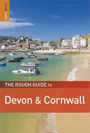

Self Catering Cottages & Flats East of Penzance
Holiday cottages and flats in the Penzance & Penwith are a great choice if you're looking for peace and quiet and the freedom to come and go as you please with no set itineraries or meal times to keep to.
They're great for family holidays and groups as you can usually find places large enough to accommodate everyone. They're a home away from home with plenty of choice whether you're looking for a countryside or coastal retreat.
To the East of Penzance lies Marazion & St. Michaels Mount, Longrock, Perranuthnoe, Gulval, Ludgvan & Praa Sands.
- Holiday Cottages & Flats in Penzance town centre
- Holiday Cottages & Flats North of Penzance
- Holiday Cottages & Flats West of Penzance
- 8 Old Court Cottages
Kenegie Manor, Gulval, Penzance.
- 9 Old Court (01354 638282)
Kenegie Manor, Gulval, Penzance
- 18 Freshbrook Close (01736 365723)
Jelbert Way, Eastern Green, Penzance
- 30 Old Court Cottages (01503 250570)
Kenegie Manor, Gulval, Penzance
- 33 Park Bungalows (01522 868050)
Kenegie Manor, Gulval, Penzance
- 36 Old Court Cottages (01902 845139)
Kenegie Manor, Gulval, Penzance~
www.kenegie.com
- 44 Old Court Cottages (01902 566876)
Kenegie Manor, Gulval, Penzance
- Arizona (01736 710222)
Marazion, Penzance
- Barton Woods Cottage (01189 332136)
Kenegie Manor, Gulval, Penzance
- Blue Horizon (01736 711199)
Fore Street, Marazion, Penzance
- Bal Farm Cottages (01736 366254)
Gulval, Penzance
- Broom Farm Cottage (01736 763738)
Rosudgeon, Penzance
- Barn Cottage, 2 Old Barnyard (01952 415349 )
Kenegie Manor, Gulval, Penzance
- Bay View Barn (01483 884111)
Ludgvan, Penzance
- Chy Bowjy (01736 368815)
Chysauster, Penzance
- Chyandaunce (01242 232769)
Gulval, Penzance
www.gulvalcottages.co.uk
- Chyancrowse (01242 232769)
Gulval, Penzance
www.gulvalcottages.co.uk
- Cuckoo Cottage (01736 862064)
Crowlas, Penzance
- Coach House Cottage (02920 513836)
Marazion, Penzance
- Cedars Chalets (01736 711375)
Perranuthanoe, Penzance
- Castle View (01736 710820)
Marazion, Penzance
- Higher Chellew Barns (01736 364532)
Nancledra, Penzance
- Holiday Cottage (01736 788698)
Gulval, Penzance
- Laidback Trailblazers (01736 367742)
The Old Barn, Bosulval, Newmill, Penzance
- Millstream (01736 351848)
Ridgevale Close, Gulval, Penzance
- Marazion Cornish Cottage (01214 218185)
Marazion, Penzance
- Marazion House & Flat (01736 710254)
Marazion, Penzance
- Nanceddan Farm (01736 740165)
Ludgvan, Penzance
- Old Court Cottages (01736 350520)
Kenegie Manor, Gulval, Penzance
- Prussia Cove Cottages (01736 762014)
Higher Keneggy Farm, Rosudgeon, Penzance
- Perranuthnoe Cottages (07071 225064)
Perranuthnoe, Penzance
- Polgew (01736 711710)
Godolphin Terrace, Marazion, Penzance
- Roslyn (07737011428)
F11 Riviere Towans, Phillack, Hayle TR27 5AF
www.cornwallseasideholiday.com
- Rosemorran (01736 361479)
Gulval, Penzance
- Rooks Wood (01736 366883)
Germoe, Penzance
- Sunset Properties (01736 788698)
Kenegie Manor, Gulval, Penzance
- Seameads Holiday Homes (01753 664336)
Praa Sands, Penzance
www.seameads.co.uk
- St Pirans Cottages (01962 774379)
Perranuthnoe, Penzance
- Trevarthian Holiday Homes (01736 710100)
West End, Marazion, Penzance
www.trevarthian.co.uk
- The Old Primary School (01736 741309)
Ludgvan, Penzance
- Tregew (01736 710247)
2 Bungalow Flats, Marazion, Penzance
- Trevean Farm Cottage (01736 762340)
Rosudgeon, Penzance
- The Vineyard (01736 710547)
Perranuthnoe, Penzance
- Trelil House (01736 762380)
Ashton, Penzance
- The Engine House (01736 711604)
Tregurtha Downs, Plain-an-Gwarry, Penzance
- Villa Comino (01483 534831)
Praa Sands, Penzance
- Wheal Rodney Holiday Park (01736 710605)
Gwallon Lane, Marazion, Penzance
- West Breeze (01736 741197)
Crowlas, Penzance
- White House at Marazion (01736 710424)
Marazion, Penzance
- Withey Cottage (01736 762488)
Perranuthnoe, Penzance
- Zennor Cottage (01736 711452)
Beacon Road, Marazion, Penzance
Cornwall Travel Guides |
||
 |
 |
 |
image - cornishcottageholidays.co.uk